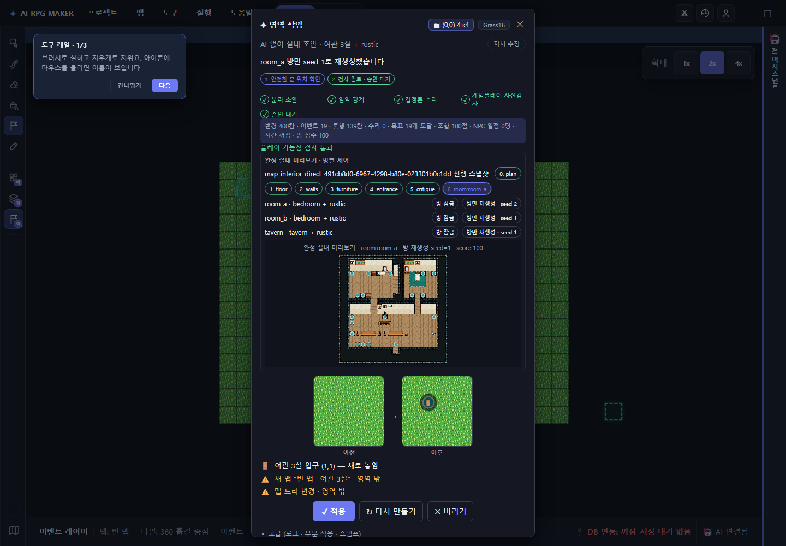

verified editor workflow
“맵을 만든다”에서
40 / 40하네스 focused 테스트 통과
4,966전체 게이트가 실제 수집한 테스트
0기준선 대비 신규 회귀
1 → 2room reroll 후 ghost revision
“맵을 만든다”에서
“검증하고 선택한다”로.
타일맵 하네스를 분리 초안, 단계별 스냅샷, 구조화 평가, 방 단위 수정, 단일 승인 경계로 다시 설계했습니다. AI 호출 없이도 연결된 실내를 만들 수 있고, 플레이 불가능한 결과는 저장 전에 막습니다.
무엇이 달라졌나
기존 흐름의 핵심 문제는 “생성”과 “승인”이 충분히 분리되지 않고, 결과의 플레이 품질과 수정 단위를 사용자가 판단하기 어려웠다는 점입니다.
이전: 결과 중심
- ×AI 도구 노출/쿼터에 의존해 실내 하네스를 시작
- ×중간 레이어와 수리 과정을 사용자가 보기 어려움
- ×경고가 문자열 중심이라 위치·심각도·차단 여부가 불명확
- ×방 하나를 바꾸려 해도 전체 결과를 다시 만들기 쉬움
- ×새 맵·문·시스템 변경을 map-only undo로 완전히 되돌리기 어려움
현재: 검토 중심
- ✓AI 없이 실내 초안 버튼으로 home/inn/manor 직접 시작
- ✓plan → floor → walls → furniture → entrance → critique 스냅샷
- ✓구조화 issue, blocker, 지표와 BFS 월드 도달성 검사
- ✓방 잠금 + seed 기반 방 단위 reroll + ghost 즉시 갱신
- ✓full-project snapshot 한 번, store replace 한 번, undo 한 번
실제 검증 화면
첨부하신 화면은 브라우저 스모크에서 재현한 실제 UI입니다. 여관 3실에 rustic modifier를 조합하고, 첫 방을 seed 1로 다시 생성한 직후입니다.

AI 없이도 안전하게 연결되는 실내
직접 시작 경로는 40-tool 노출 쿼터와 무관합니다. 현재 월드의 시작점부터 도달 가능한 빈 문 칸을 고르고, 새 실내의 입구와 양방향 transfer를 만든 뒤 동일 승인 게이트로 보냅니다.
1. 월드 BFS기존 transfer를 따라 authored start에서 도달 가능한 셀 계산
2. 문 선택선택 영역 안, 이벤트 없음, 통행 가능, 인접 복귀 칸 검증
3. 레이어 생성plan부터 critique까지 detached memory에서 단계 실행
4. 양방향 연결외부 문과 실내 출구가 서로 유효한 목적지를 가리킴
5. 동일 승인AI 경로와 똑같은 pending review/apply 경계 사용
저장 직전까지 반복되는 하드 게이트
처음 검토할 때만 안전한 것이 아닙니다. 전체 적용, 교체 후보, NPC 결정, 방 reroll 등 candidate가 달라지는 모든 지점에서 fresh review를 다시 실행합니다.
01
Detached cloneWeakMap 편집 세션까지 복제, Project JSON은 오염하지 않음
memory02
Region scope선택 영역 밖 타일·이벤트 변경을 차단
hard03
Bounded repair고립 셀과 자동 inspect 이벤트만 제한 횟수 안에서 수리
bounded04
World navigation문 출발점, transfer 목적지, 목표 이벤트, NPC 목적지 BFS
hard05
Stale-base CAS클릭 순간 현재 프로젝트 fingerprint가 base와 같은지 확인
hard06
Single mutation승인 시 project snapshot 1회 + store.replace 1회
atomic전체 재생성 대신 방 하나만 수정
하네스 세션은 레이어별 map snapshot을 남깁니다. 사용자는 생성 과정을 되짚고, 만족한 방은 잠그고, 불만족한 방만 새 seed로 다시 만들 수 있습니다.
0
plan
방 역할, 조합형 modifier, 출입구와 연결 구조 확정
1
floor
semantic floor material과 영역별 바닥 구성
2
walls
경계·내벽·inner door를 통행 규칙과 함께 생성
3
furniture
방 역할과 modifier에 맞는 소품 배치
4
entrance
실내 출구 이벤트를 외부의 검증된 복귀 칸으로 연결
5
critique
walkability, 기능 배치, 방별 점수와 구조화 이슈 계산
6
room reroll
선택한 room bbox 안만 변경하고 외부 타일·stack·이벤트 복원
실제 방 제어 모델
room_abedroom + rustic
방 잠금seed 2room_bbedroom + rustic
방 잠금seed 1taverntavern + rustic
방 잠금seed 1불변식: reroll 대상 방 밖의 lower/upper tile과 tile stack은 byte-for-byte 복원되고, 모든 이벤트도 보존됩니다. 잠긴 방은 mutation 전에 거절됩니다.
“좋아 보임”을 넘는 플레이 품질 지표
검토 화면은 변경량뿐 아니라 통행, 목표 도달성, 일정, 방 품질을 함께 보여 줍니다. 조합 점수는 이미지 비전이 아니라 변경 영역의 타일 조합 다양성을 측정하는 결정론적 휴리스틱입니다.
139통행 가능한 변경 셀
18 / 0도달 목표 / 차단 목표
100방 평균 품질 점수
2검증된 양방향 transfer
NPC 시간 시스템 사전 결정
새 schedule이 있는데 time system이 꺼져 있으면 적용은 자동으로 진행되지 않습니다.
시간 켜기
일정대로 이동
또는일정대로 이동
현재 위치 고정
새 schedule 제거
새 schedule 제거
부분 적용도 구조를 이해
일반 타일 제안은 stack-safe chunk로 골라 적용합니다. 하지만 새 실내처럼 문·맵·세션이 함께 움직이는 구조 변경은 tile-only 부분 적용을 숨겨 고아 연결을 막습니다.
tile chunks: 선택 가능structural room: 전체만
역할 테마 × 분위기 modifier
castle/church/school 같은 대형 분기 복제 대신, 방의 기능 역할과 분위기 modifier를 조합합니다. semantic tile catalog가 실제 ID를 역할 이름으로 연결해 평가와 생성이 같은 언어를 씁니다.
역할
bedroom, study, kitchen, storage, tavern이 필요한 기능과 소품을 정의합니다.
Modifier
rustic 같은 modifier가 역할을 바꾸지 않고 재료·장식·분위기를 덧씁니다.
Semantic catalog
floor.walkable, furniture.storage 같은 역할을 tile ID와 연결해 숫자 분기를 줄입니다.
Role \ Mood
default
rustic
다음 modifier
bedroom
침대 · 수납 · 동선
침대 · 목재 · 소박한 소품
역할 규칙 유지
tavern
테이블 · 서비스 동선
통 · 목재 · 따뜻한 홀
역할 규칙 유지
kitchen
작업대 · 보관 · 통행
곡물 · 상자 · 거친 재료
역할 규칙 유지
구현 책임을 어떻게 나눴나
UI가 안전 로직을 직접 소유하지 않습니다. 생성, 검토, pending 승인, 화면 표시를 분리해 headless·inline·modal 경로가 같은 불변식을 공유합니다.
| 영역 | 핵심 파일 | 책임 |
|---|---|---|
| Detached memory | detachedDraftMemory.ts | WeakMap namespace 복제, Project JSON과 편집 세션 분리 |
| Room engine | roomHarness/engine.tsroomHarness/facade.ts | start/advance/evaluate, checkpoint, lock, seeded room-only reroll |
| Direct entry | regionTask/runDirectRoomDraft.ts | 안전한 외부 문 선택, 실내 생성, 양방향 transfer, pending 등록 |
| Hard review | regionTask/harnessReview.ts | 범위, bounded repair, 월드 BFS, NPC/time, gameplay metrics |
| Approval boundary | regionTask/pendingRegionApply.ts | fresh review, stale base, apply/discard, room/NPC 후보 갱신 |
| User surface | panels/regionTaskModal.ts | 실행 경로, before/after, checkpoint, blocker, room controls |
| Undo | regionTask/runRegionTask.ts | 승인 시 full-project snapshot 1회 + store.replace 1회 |
| Test runner | scripts/run-vitest.mjs | Windows drive-letter 정규화, 실제 suite collection 안정화 |
검증 결과
단순히 명령이 exit 0인지 보지 않고, 실제 테스트 수집 수·기준선 대비 회귀·브라우저 상태·버리기 후 프로젝트 동등성을 확인했습니다.
현재 감독 검증
2026-07-30 · isolated worktree · port 9805
PASS
40 / 40focused Vitest
Typecheck오류 0
Buildeditor + player 성공
4,966 tests전체 gate 실제 수집
0 regressionsbaseline 대비 신규 실패 없음
Browserpage error 0
Ghost 1→2reroll preview 갱신
Partial 0구조 제안 partial 숨김
Blocker 0양방향 월드 검사 통과
Unchangeddiscard 후 JSON 동일
저장소 전체 게이트는 기존 기준선의 실패를 포함해 Vitest exit 1이지만, 4,966개가 실제 수집됐고 regressions: []입니다. focused 하네스 테스트는 별도로 40개 모두 통과했습니다.